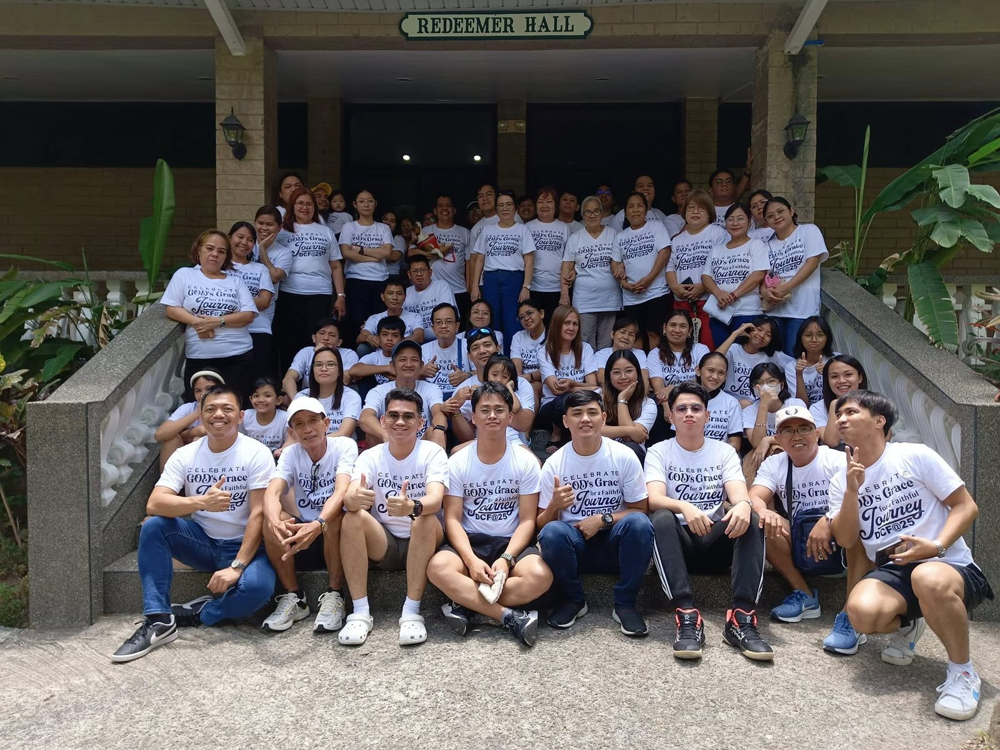
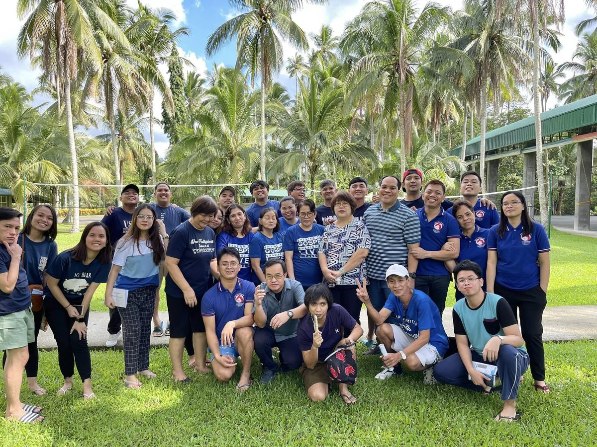
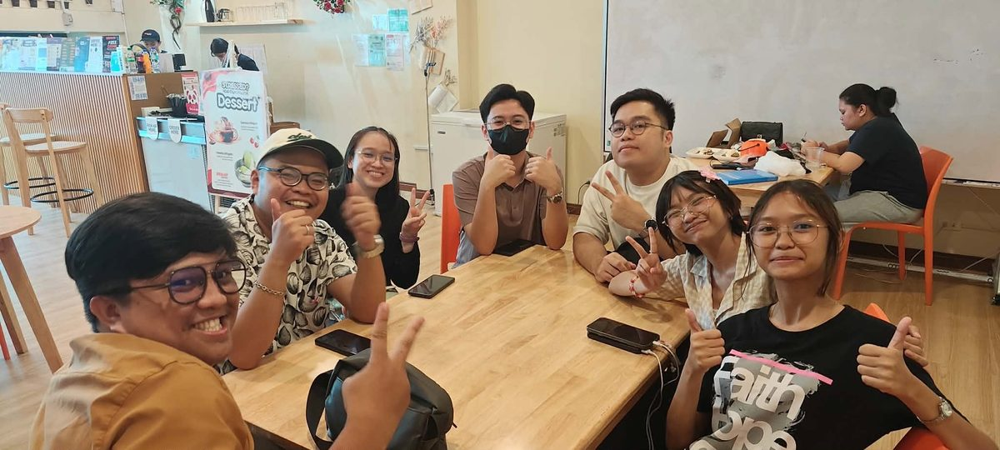
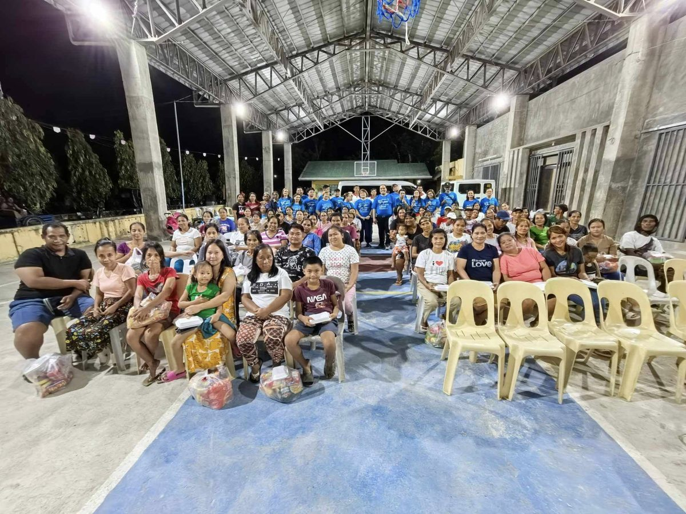
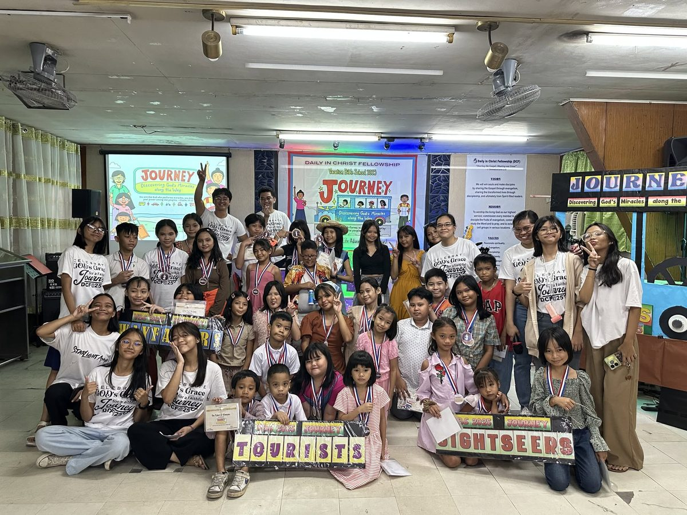
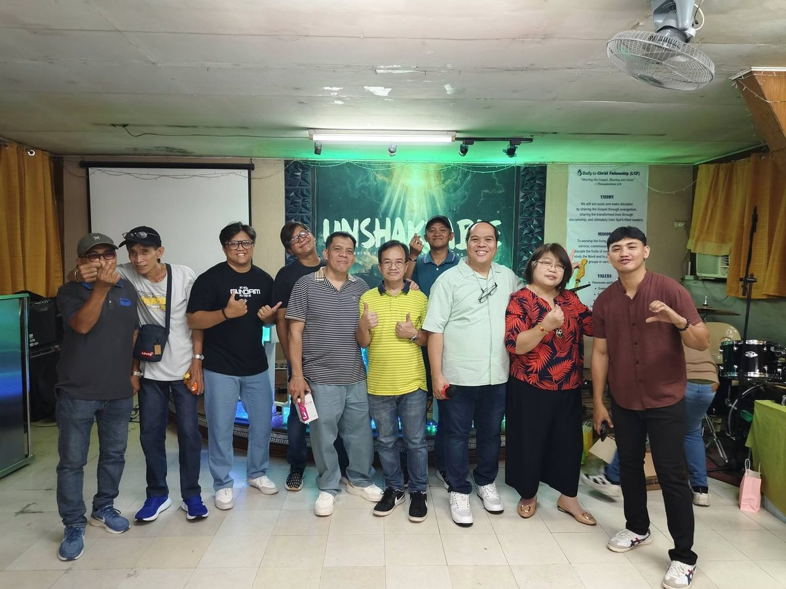
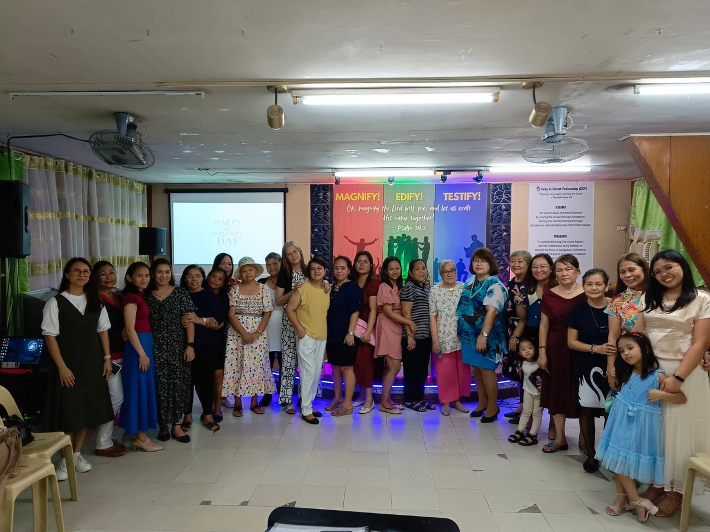
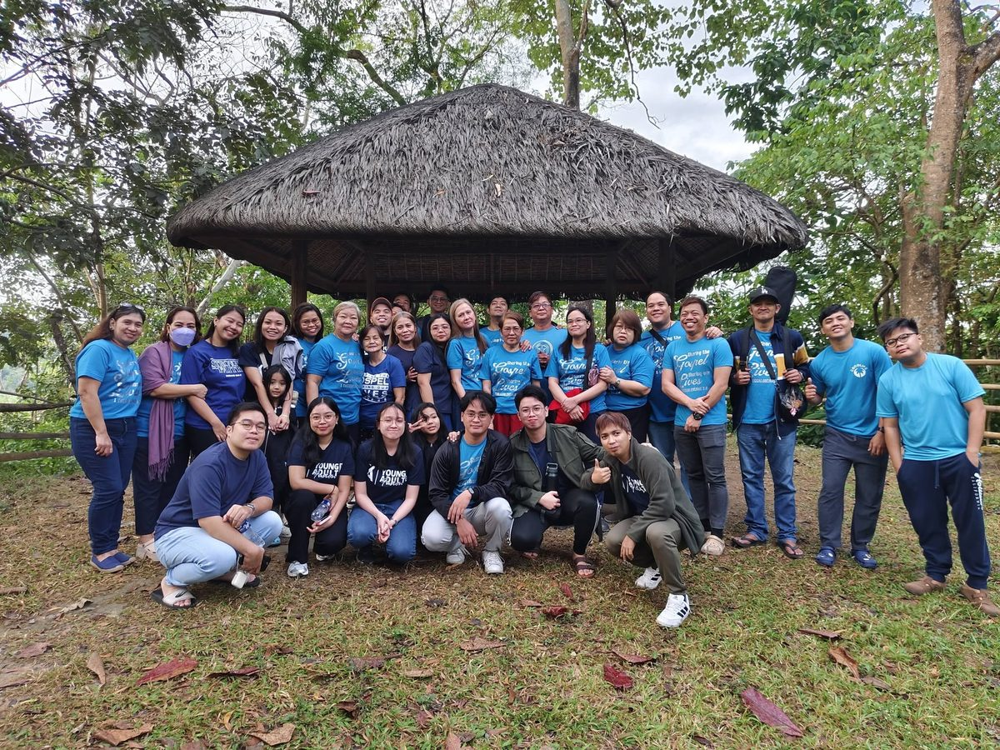

What to expect
Warm welcomes, heartfelt worship, and a 35-minute message from the Bible that speaks to real life. Services run about 90 minutes.
A church family · Quezon City
Sharing the Gospel, Sharing our Lives 1 Thess. 2:8
We are an ordinary people learning to follow an extraordinary Savior — in the quiet mornings, the long weeks, and everything in between. Come as you are and grow with us in worship, the Word, and one another.
Sunday
Sunday AM Service
9:30 AM
Sunday
Sunday School
9:30 AM
Sunday
Youth Service
2:30 PM
Wednesday
Midweek Prayer Night
2nd & 4th Wed · 7:00 PM
New here?
No perfect people required. Whether you have walked with Jesus for decades or you are simply curious, there is room for you here this Sunday.
Warm welcomes, heartfelt worship, and a 35-minute message from the Bible that speaks to real life. Services run about 90 minutes.
Safe, screened volunteers and age-appropriate classes for nursery through Grade 6 during the Sunday service. Check-in opens 20 minutes early.
Let us know you're coming and a member of our welcome team will meet you at the door, show you around, and save you a coffee.

Our story
Daily in Christ Fellowship began with a handful of believers praying for a church that would take Jesus seriously — not just on Sunday, but on Monday.
We are still that: a family gathered around Scripture, committed to knowing Christ and making Him known in our neighborhoods and to the ends of the earth.
Our mission & vision
Our name is a promise, and Jesus Christ is at the center of it. Mission and vision are simply how we keep that promise — worship that is His, discipleship that makes us like Him, and cell groups that carry His name across the city.
To worship the living God as our highest service; commission every member to disciple the fruits of evangelism, commits to study the Word and to pray; and to establish cell groups in various locations.
We will win souls and make disciples by sharing the Gospel through evangelism, sharing the transformed lives through discipleship, and ultimately train Spirit-filled leaders.
Core values
“Because we loved you so much, we were delighted to share with you not only the gospel of God but our lives as well.”1 Thessalonians 2:8
Ministries
From the little ones in Kids for Christ to the grandparents who pray for them by name, from the praise team to the multimedia booth — this is a church where families look after one another, and there is room for you to grow, to serve, and to belong.

Singers, musicians, and worship leaders who help us meet God every Sunday — from the first rehearsal to the last song.
Explore
Sound, livestream, lyrics, photography, and social media — the team that carries the service to whoever is watching from home.
Explore
Feeding programs, visitation, and partner churches and workers here in Metro Manila and beyond.
Explore
Our Sunday school for nursery to Grade 6: Bible stories, songs, crafts, and volunteers who know your child by name.
Explore
Teens and young adults growing together through worship, small groups, outings, and camp.
Explore
Fathers and men gathering for breakfast, Bible study, and practical service to the church and the city.
Explore
Mothers and women of every season — a morning study with childcare and an evening circle for those who work.
Explore
Our small groups are called cell groups — believers meeting in homes across the city to pray, study, and grow together.
ExploreSermons
Missed a Sunday, or want to listen again? Every message is recorded and available within hours.
Jesus taught us to pray for today's bread — not a year's supply. A message about the quiet, daily dependence that keeps a soul alive.
Upcoming
Life happens around tables, in homes, and out in the city. Here is what is coming up.
From our Facebook page
Announcements, prayer requests, and photographs from our life together are posted on our Facebook page. The pinned post at the top is always the thing we most want you to see.
“Sharing the Gospel, Sharing our Lives.”
Our announcements, prayer requests, and photographs live on our page. Tap through to read the pinned post — and say hello while you are there. We would love to meet you this Sunday.
Read the pinned post“Just as you received Christ Jesus as Lord, continue to live your lives in him, rooted and built up in him…”Colossians 2:6–7
Come and see
Doors open at 9:00 AM. Coffee is on, the welcome team is ready, and nobody will ask you to stand up and introduce yourself.